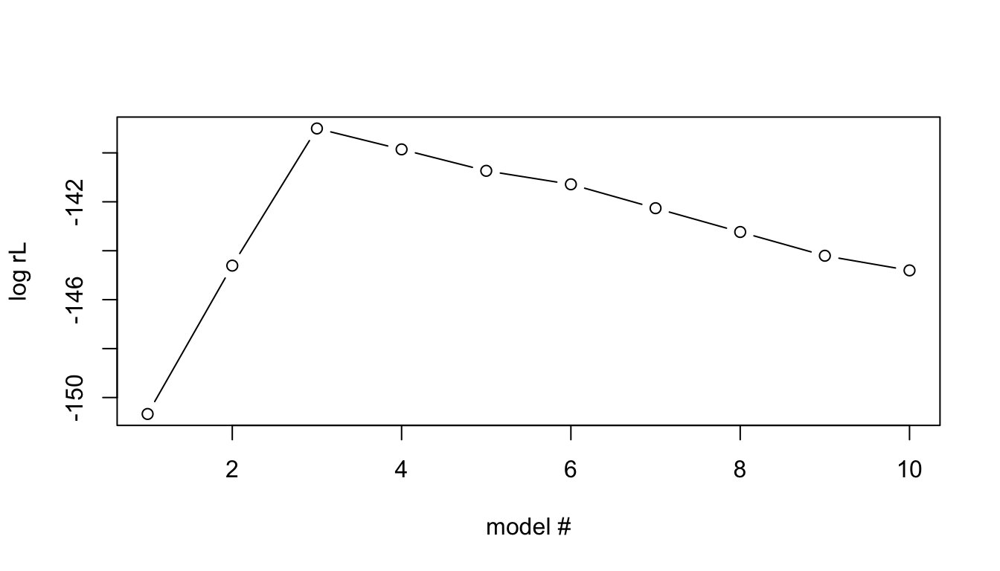

4 Regularization
Regularization is a concept that adds auxiliary criteria, so-called regularization terms, to probabilistic models. This is called regularized likelihood models or penalized likelihood models. Typically, the regularization term is a function of parameters \(\beta\):
\[\log rL[\beta | X, Y] = \log L[\beta | X, Y] - f(\beta).\]
4.1 Example | A naive regularization model
A very simple regularized likelihood model uses \(f(\beta) = \#\beta = \#X\), that is the number of \(X\) variables.
\[\log rL[{\beta} | X, Y] = \log L[\beta | X, Y] - \#X, \]
Applying this rL to our example data, solves the overfitting problem.
# compute loglikelihood (ll) for all models including 1-P variables
rl= vector()
for(i in seq(1,P)){
xi=X[,seq(1,i), drop=FALSE]
fit = lm(Y~xi)
# Compute the regularized Likelihood
rl[i] = logLik(fit) - i
}
# plot ll of all models
#plot(rl, xlim=c(1,P), ylim=c(floor(min(rl)),ceiling(max(rl))),ylab="log rL", xlab="model #", type = "b")
plot(rl, xlim=c(1,P), ylab="log rL", xlab="model #", type = "b")
# Identify maximum rL model and print it
maxrl=max(rl)
print(paste("Model",which(ifelse(rl==maxrl,TRUE,FALSE)), "has the maximum rL"))## [1] "Model 3 has the maximum rL"4.1.1 Mini-task: Think about:
- Which is the best model? Is this correct compared to our oracle knowledge?
- What can we say about how good it is compared to the other models?
- Can you see a drawback in our model testing approach above? If so, how can we solve that?
Some possible answers
Some possible answers
- We see that the best model is the one with the 3 first X-variables (in line with our oracle knowledge) and that the likelihood of second best model (with the first 4 X-variables) is \(\approx 40\%\) of the best likelihood.
Extra Reading
- Sometimes it is desirable to compute a significance for rejecting a model in favour of another model. A NULL distribution for the \(relL\) statistic is usually obtained through simulation, e.g., using parametric bootstrapping.
- Now, In this case we happened to know that the first 3 variables was the right one, so the order we choose to include them was correct. However, in the general case, we do not know this. How solve this?
- Best subset method; involves testing all possible subsets, which is computationally time-consuming and unfeasible for larger sets of models.
- Lasso; see next section
4.2 Regularization | LASSO and Feature selection
LASSO stands for Least absolute shrinkage and selection operator (“shrinkage” is another common term for regularization) and is a method for selecting variables to include in a multivariate model.
Here, we do not explicitly compare two models with different number of variables. Instead all variables are included and the regularization acts upon the values of \(\beta\) so that only important variables have a \(\beta_i> 0\).
Classical LASSO builds on RSS (residual sum of squares) of a linear regression model \(Y \sim X{\beta}\) with regularization
The regularization term \(f(\beta) = \lambda\sum_{\beta_i\in\beta} |\beta_i|\)
The \(\lambda\) parameter defines how strong the regularization becomes; a higher \(\lambda\) will put a stricter limit on the estimation of individual \(\beta_i\) values.
Lasso is traditionally described as RSS with an auxiliary criterion/constraint:
\[min\left\{RSS\right\} + \lambda\sum_{\beta_i\in\beta} |\beta_i|,\] but, equivalently, it can be written in terms of the likelihood: \[max \log L[\beta|X,Y] - \lambda\sum_{\beta_i\in\beta} |\beta_i|.\]Extra Reading
Other common notation for LASSO:
- You might often see the notation \[min_{{\beta}}\left\{RSS\right\} \textrm{ subject to } ||{\beta}||_1 <= t\] where \(t\) is related to \(\lambda\).
The optimal values of \(\beta\) are then estimated, using some algorithm (lars or coordinate descent).
Extra Reading
The coordinate descent algorithm is used in the R package glmnet:
- Over a grid of \(\lambda\in [0, \infty]\), do
- Start with all \(\beta=0\)
- until convergence repeat for each \(\beta_i\)
- while keeping all other \(\beta\) fixed and \(\beta_i=0\), compute partial residuals
- estimate \(\beta_i\) by RSS on the partial residuals
- update \(\beta_i\) using the RSS estimate and \(\lambda\).
4.2.1 Example | Lasso using the glmnet R-package
- Use function
glmnetto perform LASSO analysis on our example data; relevant arguments of the function:- preprocessing
- Standardization in
glmnet: \(x' = \frac{x-\bar{x}}{\sqrt{\frac{1}{n}\sum_i(x_i-\bar{x})^2}},\) where \(\sqrt{\frac{1}{n}\sum_i(x_i-\bar{x})^2}\) is the uncorrected sample standard deviation.- The variables Y and X must be centered and standardized to ensure that all variables are given equal weight in the model selection.
- standardization of \(X\) to unit variance in
glmnetis obtained by setting the argumentstandardize=TRUEwhich is the default - the values of \(Y\) is always standardized (?) for
family=gaussian(LASSO)- and the coefficients are back-standardized before reported
- Standardization in
- linear regression (
family='gaussian'= default) - LASSO (
alpha=1= default)
- preprocessing
library(glmnet)
# run lasso (alpha=1) for linear model (family=gaussian)
fit = glmnet(X,Y, family="gaussian", alpha=1, standardize=T)- A graphical way to view the result is to
plotthe paths of \(\beta\) for increasing values of \(\lambda\). This plot shows how the \(\beta_i\) for different variables \(i\) changes with \(\lambda\). The plot is perhaps best read from right to left, going from higher and thereby stricter, \(\lambda\) values to lower \(\lambda\) values including more and more variables/non-zero \(\beta_i\).
par(mfrow=c(1,1))
plot(fit, xvar="lambda",label=T)Show result

4.2.1.1 Mini-task | Think about
- In which order are variables included (i.e., their \(\beta\) becomes non-zero?
- In which direction is the effect
- Which lambda should we select?
- Given our oracle knowledge, where would an appropriate \(\lambda\) be?
- Can we use that in the general case?
Some possible answers
Some possible answers
- The order appears to be \((1,2,3,7,6,5,10,9,4,8)\)
- \(\beta_i > 0, i\in \{1,2,3,4,7,9\}\), while \(\beta_i<0, i\in \{5,6,8,10\}\)
- Given oracle knowledge, the correct \(\lambda\) appears lie somewhere in the interval \([\approx \exp(-1), \approx\exp(-2.5)]\)
- In the normal case, we do not have oracle knowledge.
4.2.2 Cross-validation
The LASSO model will be different depending on how we set \(\lambda\). A problem is to decide the optimal \(\lambda\) to use.
- \(\lambda\) too high: risk of missing relevant variables
- \(\lambda\) too low: risk of overfitting
glmnet addresses this using \(k\)-fold cross-validation – what is that?
4.2.2.1 Cross-validation | How to test for overfitting
The ultimate way of testing an estimated model (with parameters) would be to apply it to new data and evaluate how well it performs, e.g., by measuring the mean squared error, \(MSE\) (\(=RSS/N\)). Naturally, we want to minimize \(MSE\), i.e., the error of the model. In our LASSO application, this means that we want to select the \(\lambda\) that minimizes the \(MSE\)
In cross validation, this approach is emulated by partitioning the data at hand into a training and validation data set. The model parameters are estimated (‘trained’) on the the training data and the validated on the validation data. (Optionally, a test partition can be assigned in cross-validation on which the final, selected model is evaluated; this is not employed here).
By chance, this may fail if the partitioning is ‘non-representative’. A solution is to repeat the cross-validation procedure with another partitioning.
In \(k\)-fold cross validation, the original data is split into \(k\) sub-datasets \(\{D_1,D_2,\ldots, D_k\}\). For \(i \in \{1,2,\ldots, k\}\), set \(D_i\) as the validation data set and the union of the other datasets be the training data. Perform cross validation as above.
This gives a distribution of \(MSE\) from which we can estimate, e.g., mean and standard deviation.
Extra Reading
This distribution allows us to use more elaborate means to select \(\lambda\). One common suggestion is to use the largest \(\lambda\) whose \(MSE\) is within 1 standard error from the minimum value (called lambda.1se in glmnet). The motivation argued for this choice is parsimony, in the sense that larger \(\lambda\) will include fewer variables (hence it is parsimonious in terms of number of included variables).
Here we will limit ourselves to finding the minimum \(\lambda\), called lambda.min in glmnet, but anyone is free to test if lambda.1se gives a different result.
4.2.2.2 Example | Determine optimal LASSO\(\lambda\)using cross-validation
- Use the function
cv.glmnetto perform cross validation (same options as forglmnet), store it in a R variable, e.g.,cvglm, plotthe cross-validation results- Compare with the plot of estimated \(\beta_i\) under different \(\lambda\) (these can be accessed from the result as
cvglm$glmnet.fix). - Determine the optimal \(\lambda\) (the one with minimal error, can be found in
cvglm$lambda.min)
library(glmnet)
par(mfrow=c(1,1))
# run lasso (alpha=1) for linear model (family=gaussian)
cvglm=cv.glmnet(X,Y, family="gaussian", alpha=1, standardize=T, nfolds=100)
plot(cvglm)
plot(cvglm$glmnet.fit, xvar="lambda",label=T)
minlambda=cvglm$lambda.min
print(minlambda)Show result

## [1] 0.10648914.2.2.2.1 Think about
- Which is the \(\lambda\) selected by
cv.glmnet? - Does this make sense given our oracle knowledge?
Some possible answers
Some possible answers
- Cross-validation-selected optimal lambda is 0.1064891
- Yes, this includes only the oracle knowledge correct variables \(X_1, X_2, X_3\)
4.2.2.3 Example| Final LASSO effect sizes
- Finally print a table with the \(\beta\) coefficients (including the intercept, \(\beta_0\)) for the optimal model (i.e., at minimum \(\lambda\)); compare with oracle knowledge. (Hint: see
? coef.cv.glmnet).
# Actually the following suffice for output on console
#coef(cvglm, s="lambda.min")
# But to get a nice table:
library(dplyr) # for nice table
library(kableExtra) #for nice table
coefglm=as.data.frame(as.matrix(coef(cvglm, s="lambda.min")))
coefglm=cbind(seq(0,10),c(b0, b, rep(0, 7)),coefglm)
names(coefglm)=c("beta","value (oracle)", paste0("estimate(lambda=",signif(minlambda,3),")"))
kable(coefglm, row.names=F) %>% kable_styling( font_size = 14)Show result
| beta | value (oracle) | estimate(lambda=0.106) |
|---|---|---|
| 0 | 3.0000000 | 3.6046135 |
| 1 | 0.8125118 | 0.5905522 |
| 2 | 0.6009469 | 0.4631531 |
| 3 | 0.7232911 | 0.5204561 |
| 4 | 0.0000000 | 0.0000000 |
| 5 | 0.0000000 | 0.0000000 |
| 6 | 0.0000000 | 0.0000000 |
| 7 | 0.0000000 | 0.0000000 |
| 8 | 0.0000000 | 0.0000000 |
| 9 | 0.0000000 | 0.0000000 |
| 10 | 0.0000000 | 0.0000000 |
4.2.2.3.1 Think about
- Does the effect sizes make sense – if not can you think of why?
Some possible answers
Some possible answers
- Well…yes!
- \(\beta_i\) is non-zero only for oracle-known variables \(X_1, X_2, X_3\)
- they don’t exactly equate our oracle knowledge parameter values – they appear to be scaled.
- but their relative order of amplitude is right.
- Perhaps the normalization affected scaling.
4.3 More about regularization
4.3.1 General cost function
Regularization can be generalized to apply not only to linear models. For example glmnet allows using regularized likelihood expression for generalized linear models, GLMs.
Even more general, regularization can be formulated to apply some general loss (or cost or error) function, \(\mathcal{L}(Y|X, \beta),\) commonly used in Machine learning. The modified loss function (including the regularization) can be written
\[\mathcal{L}(Y|\beta, X, \lambda) = \mathcal{L}(Y|\beta, X) + \lambda f(\beta).\] This formulation allows application to various regresssi0on and classification problems.
Examples of loss functions:
- \(RSS\) (least squares method)
- mean square error (MSE) = \(RSS/N\)
- cross entropy \(\sum_i y_i \times Pr[y_i|\beta, x]\)
A note on notation
Here, for consistency, I use \(\beta\) for the parameters of the model, but other notation is commonly also used, e.g., \(w\) (for weights). In fact, \(\beta\) is often associated with regression parameters; when more types of parameters are used, it is common to use, e.g., \(\theta\) as a collective notation for all those parameters.
4.3.2 Reasons for regularizing
4.3.2.1 Avoid false positives dues to overfitting
In inference, where you want to identify the causative variables that contribute to the outcome. overfitting may cause false positives, that is, variables that simply explains random noise in the training data.
Applying regularization reduces these kinds of false positives.
4.3.2.2 Model selection
Compare competing models, how much better is the best model.
4.3.2.3 Generalization
In Machine learning the goal is often prediction, i.e., using the estimated model to predict outcomes \(Y'\) from a completely new set of predictors, \(X'\). Overfitting will make the estimated model to specialized to prediction of the training outcomes including the noise it contains.
Regularization can therefore be motivated as a technique to improve the generalizability of a learned model by reducing its overfitting to the training data..
4.3.2.4 Feature selection/sparsity
In many applications, e.g., for clinical diagnosis, a small model with few variables explaining the bulk of the outcome is preferred over a detailed model that explains as much of the outcome as possible. In these applications, regularization can be used for selecting the most important features and ignoring the other variables.
More generally, sparsity may also lead to more easily interpreted models, e.g., for biological questions.
4.3.3 More about cross validation – “regularization” and model evaluation
Many Machine learning techniques uses iteration to improve the model estimate incrementally. The number of iterations then becomes an important parameter – you want enough iterations to get a good model, but not so many that you get overfitting.
A common approach to this problem is to use cross-validation. Here you partition the data into three sets, training, validation, and test data sets. The test data is is not used in the iterations. In each iteration, you train the model on the training data and then evaluate it on the validation data using some loss function. You continue the iterations until the evaluated loss score is not better than the loss score from the previous iteration; this will be your final model, which is evaluated against the test data.
4.3.4 Norms
Norms is a concept that commonly pops up when regularization is discussed.
Norms are a kind of summary statistic over vectors – a functions that has a vector as input and a (non-negative) number as output. The most common notation for norms (in this case for parameter vector $) is
\(||\beta||_p,\)
where \(p\) is the “degree” of the norm.
Since this special notation is used for norms, they can at first look very incomprehensible, but we have already used a number of them!
4.3.4.1 The \(L_0\) “norm”
Our initial simple naive regularization approach actually used the \(L_0\)-“norm”, which is the number of non-zero \(beta\), which can be written mathematically as
\[||beta||_0 = \sum_i I(\beta_i=0),\] where \(I(expr)\) equals 1 if \(expr\) is true and 0 otherwise.
Geometry
Geometrically, the \(L_0\)-norm is also the Hamming distance from origo. the Hamming distance between two vectors is the number of places they disagree.
In formal mathematics, the \(L_0\)-“norm” does not properly fulfill all criteria for a norm; hence it is often, as here, written within quotation marks.
Our naive regularization can then instead be written
\[\log rL[\beta | X, Y] = \log L[\beta | X, Y] - ||\beta||_0.\] Here, the \(L_0\)-norm can also be viewed as the number of variables, \(\#X\), included in the model (if \(\beta_i=0\), then the variable \(X_i\) is not included in the model).
The Akaike Information Criterion, \(AIC\), as well as the Bayesian Information Criterion, \(BIC\), for model selection use a logLikelihood penalized with an \(L_0\) “norm”, with different values of \(\lambda\) (\(1\) and \(ln(n)/2\), respectively).
In fact, regularization with the \(L_0\)-norm would be the desired approaching most cases. However, as we have seen, finding the optimal model is really hard; in fact this is an NP-hard problem. Hence, alternative approaches using other norms has been investigated.
4.3.4.2 The \(L_1\) norm
LASSO regularization uses the \(L-1\)-norm, which is simply the sum of the absolute values of \(\beta_i\),
\[ ||\beta||_1 = \sum_{\beta_i\in\beta} |\beta_i|.\]Geometry
Geometrically, the \(L_1\)-norm is also the Manhattan distance from origo.

manhattan distance
So another way of writing LASSO is
\[min\left\{RSS\right\} + \lambda ||\beta||_1.\] As we have seen, LASSO is an effective algorithm for regularization with the \(L_1\)-norm. It also does a decent job of mimicking the \(L_0\)-“norm”, i.e., setting \(\beta_i=0\) for certain variables \(i\). However, it has been shown that it can occasionally produce non-unique solutions.
Extra reading
The absolute value \(|x|\) is not differentiable at \(x=0\), so neither is the \(L_1\)-norm. This is a drawback in some Machine Learning approaches, e.g., those using so-called gradient descent.
4.3.4.3 The \(L_2\) norm
There is also a \(L_2\)-norm: \[ ||\beta||_2 = \sqrt{\sum_{\beta_i\in{\beta}} \beta_i^2}.\]Geometry
Geometrically, the \(L_2\)-norm is also the Euclidean distance from origo.
Euclidean distance
We note that you already have been working with an \(L_2-norm\): since \(RSS = ||Y-X\beta||_2^2\) is simply the square of the \(L_2\) norm of the residuals. Similarly, the sample standard deviation could be written using the \(L_2\)-norm, \(sd(x) = \frac{||x-\bar{x}||_2}{\sqrt{n-1}}.\)
For regularization, the \(L_2\)-norm is used in ridge regression. Computationally, regularization with an \(L_2\)-norm is even more efficient than with an \(L_1\)-norm. It works well to prevent over-fitting, but because it is bad at shrinking \(\beta_i\)’s all the way to zero, it is not so good for feature selection.
Extra reading
The \(L_2\)-norm is differentiable at all values, making it usable in Machine Learning approaches using so-called gradient descent.
4.3.4.4 Combination of norms
Elastic net regularization uses a mixed model combination of the \(L_1\) norm and the \(L_2\) norm,
\[RSS+\lambda_1 ||\beta||_1 + \lambda_2 ||\beta||_2.\] The aim is to avoid some drawbacks of LASSO.
Elastic net regularization is closely related to the Machine Learning approach (linear) Support Vector Machines, \(SVN\)s